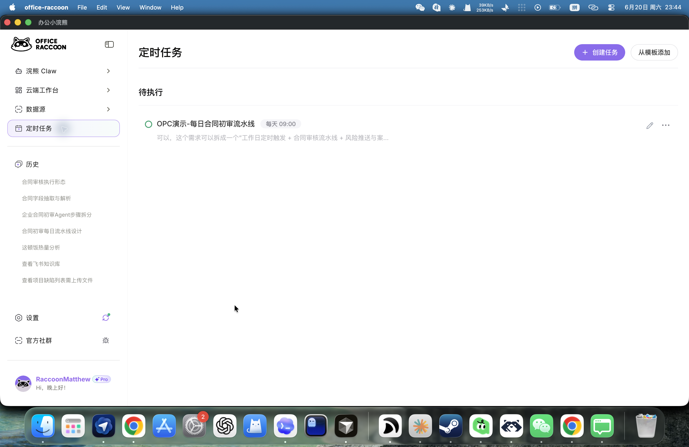
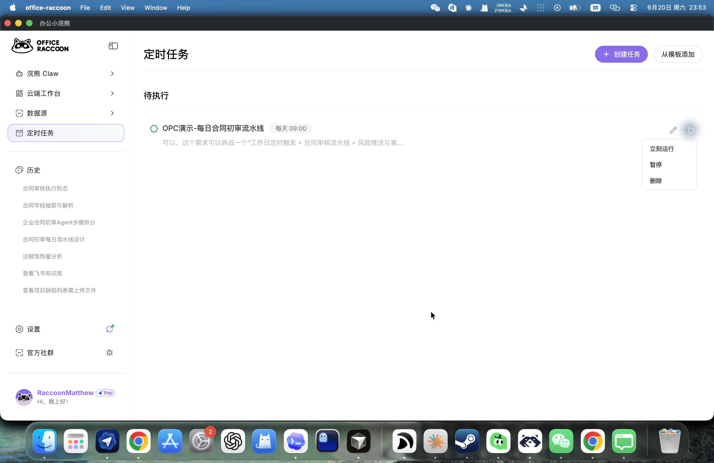
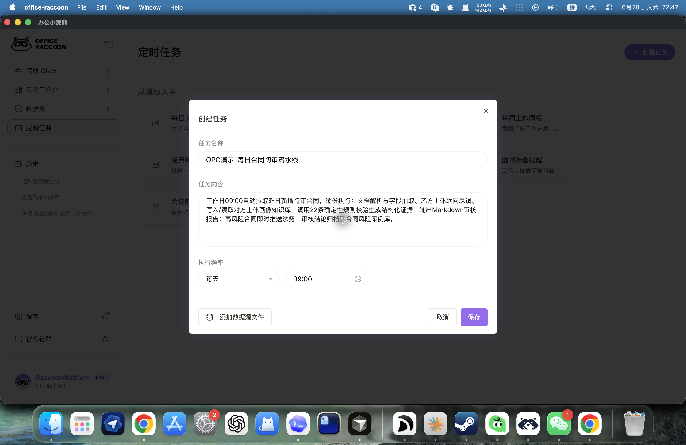
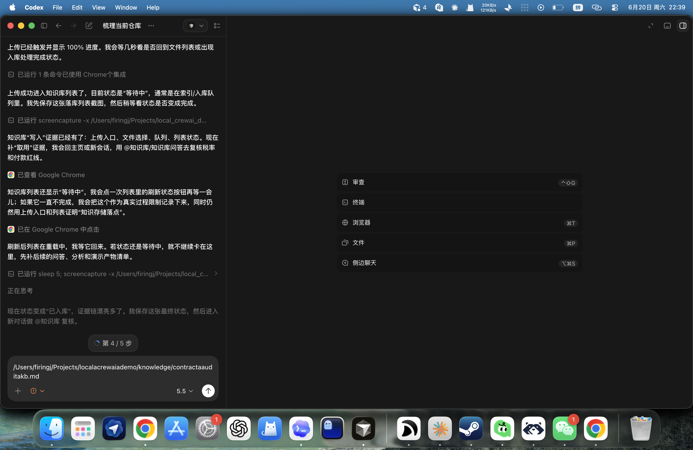
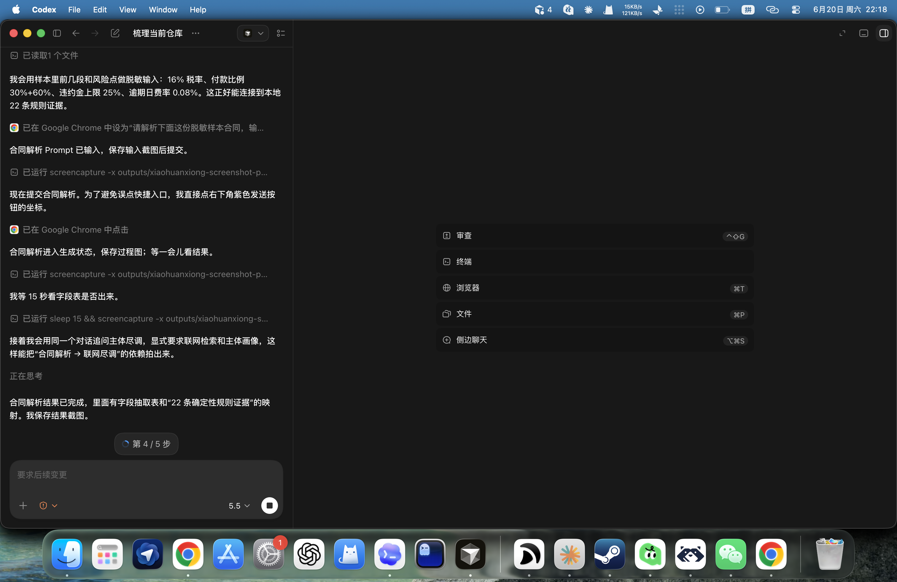
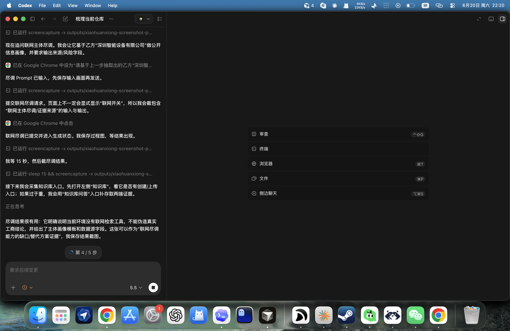

第二步 · 触发运行
04 / 10
RUN THE TASK
任务不是写在文档里
而是在小浣熊里跑过
桌面端录屏里能看到：任务在列表中、菜单有“立刻运行”、触发后进入运行中状态。



每一步都对应一张小浣熊截图或录屏，让评委直接看到操作过程。
作品主角是小浣熊：规则清单只是给它的证据，最终解释、沉淀和汇报都在小浣熊流程里完成。

工作日早上
合同进入队列
给法务复核
桌面端录屏里能看到：任务在列表中、菜单有“立刻运行”、触发后进入运行中状态。



固定审查依据
同类风险复用
越用越完整

甲乙方、金额、税率
本地确定性证据
小浣熊生成解释

主体公开风险
保留降级截图
开启联网后更新

问题变化
高频条款
从数据到周报
不再让评委猜代码怎么用，而是把小浣熊端的过程、截图和录屏串起来。
能看到定时任务、任务名称、运行入口。
能看到菜单触发、运行中状态。
能看到知识库入库、合同解析、规则证据。
能看到小浣熊把结果整理成管理层材料。
每页都能看到它承担哪一步，截图和录屏围绕小浣熊展开。
从定时任务到周报生成，按截图顺序可以跟着走一遍。
省时间、少漏项、能沉淀、能汇报；规则命中只作为证据。
网页端「查对方公司」目前保留了无联网工具时的降级截图，没有包装成已完成工商查询。